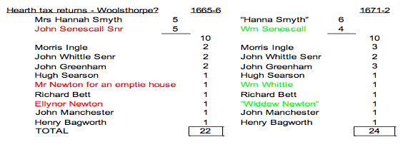

In his final piece for the Newton Tree Party blog, historian Russell Newton shares his personal thoughts and research on the birth place of Isaac Newton, Woolthorpe Manor. Find out more in his forthcoming book ‘Mr Newton’s New Perspective’.
Standing above a Lincolnshire spring of the river Witham on a rolling, gently undulating, grass-green hill and looking over towards the church about half a mile to the east is Woolsthorpe manor house. History is a story of stories. There is no historical account which is not already a retelling of someone else’s earlier stories. These stories acquire variations, mutations perhaps, and come down to us with differences, but usually with some common theme or purpose.
There is such a collection of stories associated with the house now standing at Woolsthorpe. The story goes that Isaac himself was born in this house, in the first floor room at the north end of house, now called the Red Chamber. According to these stories the house we see today was built either by Isaac Newton’s grandfather, Robert Newton, between 1623 and 1639, or in “the late 16th or early 17th century”, both versions of the story say that it is built on the foundations of an earlier manor house.
These is however persuasive evidence that points to a different story – that the present house wasn’t built on the foundations of the old house in the late 1500s to early 1600s or between 1623 and 1639, but in fact was build next to the original manor house between 1646 and 1653, the original remained alongside the present house and then pulled down about 150 years later. Isaac could not have been born in the Red Chamber but next door.
1 Where does the story begin?
History is partly detective work. This wouldn’t be necessary if those in past had left us detailed accounts of their lives. The evidence for the historical detective lays in old manuscripts, in old obscure books, and in the physical things we can examine today. In order to flush out the truth about Isaac’s birthplace we are going to have to dig deep for our evidence, and piece together a picture. The story begins in around 1797 when Edmund Turnor who owned the manor house erected a plaque in the room on the first floor in the north of the house, stating that it was in that very room that Isaac Newton first saw the light. He was a major landowner in south Lincolnshire, and had an interest was an antiquarian and Fellow of the Royal Society. His father and grandfather were also called Edmund, so for clarity I will call him Edmond III, his father Edmund II, and grandfather Edmund I. The family had lived at Stoke Rocheford, just north of Woolsthorpe, since the seventeenth century, and succeeding generations lived there into the modern era. Edmund I acquired the manor of Woolsthorpe in 1733 after John Newton, Isaac Newton’s heir-at-law, defaulted on debts and lost the estate to his creditors. Edmund I was probably acquainted with Isaac some years before not least because he was made a Fellow of the Royal Society in 1702, the year before Isaac became its President.
If Edmund III is right in identifying the actual room where Isaac first drew breath, then it might be possible to follow the re-telling of our story back into the C17. A few years earlier, in 1797, a plan exists which identifies the present house as Isaac’s birthplace, and the room under which he was born, now at the Grantham museum. Various sketches of the exterior of the house were made, and seem to concentrate in the period 1770-1800. In 1781 Edmund III or his father sent a plan of the first floor to the Gentleman’s magazine, who published it. In 1778 an anonymous reader of the Gentleman’s Magazine visited Woolsthorpe, spoke to the tenant, sketched the house, and sent it to the magazine, indicating the Red Chamber as Isaac’s birthplace. In 1788 De La Motte included a reproduction of this one in a book published that year citing it “chamber and house in which Sir Isaac Newton was borne”. In 1772 another artist – T. Tinkley – drew the house for Thomas Maude, who was to include it in his Wensleydale. The title indicates that Isaac was born in the house, but does not indicate a room.
The 1772 drawing is the earliest record in the mid-C18 of an identification of the present house with Isaac’s birthplace. The anonymous contributor of 1778 is perfectly bold in his assertions, and importantly he is the first known source to identify the first floor room at the north end of the house as the actual room in which Isaac was born. Oddly he makes no qualification to his claim, such as “thought to be” or “said to be” – it is presented as a certainty. What is also strange about this drawing is that, not only is it very detailed and unlikely to be knocked out in an hour or so, but also that the anonymous author took the substantial trouble and expense to have an engraver copy it on copper-plate for printing, their name appears at the bottom of the engraving.
The pictures and plan tell us only that there was no evidence of an oral history of Isaac’s birth in the Red Chamber before 1778, and that the only source at this date is very modest and has gone to a lot of trouble but insists on remaining anonymous, whilst failing to tell us of their source. We must look further for other stories of the house.
2. Are there other accounts?
When Edmund III submitted his plan to the Gentleman’s Magazine in 1781 he did it “to compleat Dr. Stukeley’s account the birth-place of Sir Isaac Newton…which shews at once the room in which Sir Isaac was born..”. What then was Dr. Stukeley’s account? Dr. Stukeley was William Stukeley, a Lincolnshire man, sometime friend of Isaac’s in London, who wrote a manuscript of Isaac’s life, which was never published. He contributed several stories of Isaac’s early years from various people who knew Isaac including Isaac himself. He visited Woolsthorpe at least twice. He first visited on Friday, 13 Oct 1721, on his tour of England, and was in the parish again on 11 June 1727 a few months after Isaac’s death, this time visiting the rector Mr Mason in the company of Ralph Clarke, whose grandfather had lodged Isaac when a boy at the Grantham free school. On the first visit Stukeley was shown around the house by the tenants, and sketched both the house and Colsterworth church. When he finished the sketch of the present house, he wrote underneath
“The mannor house of Wulsthorp in the parish of Colsterworth Lincolnshire, where Sr. Isaac Newton was born: being his own estate.”
He reports that the tenants “carried me upstairs and show’d me Sir Isaac’s study, in which he used to sit, when he came home from Cambridge to see his mother”. After visiting Colsterworth he etched his own copperplate engraving from his sketch of the church and had a print made. The title of Stukeley’s drawing of the house is consonant with Turnor’s later story, but does not specify the Red Chamber. However, Stukeley does not keep to this account. Six years later, in four letters to Dr Richard Mead, he writes of Isaac’s mother that she
“had left Wolsthorpe & liv’d with her second husband at North Witham. but upon his death after she had three children by him, she returned to her own house, which likewise as it ought to be remembered, was rebuilt by him”. (my emphasis)
Isaac’s mother Hannah, then a widow of about three years, married the clergyman Barnabus Smith at North Witham on 17 January 1646 and he died in August 1653. Stukeley also says that Isaac “was born in the Mannor house which was the family estate, where they hold a Court leet & Court baron”. But later still, after making further enquiries into Isaac’s life for John Conduitt, who was proposing to write a biography of his life, he came up with more details. During her marriage to Barnabus, Hannah
“lived all this while at north witham, in her husbands rectory house. but now she went back to her own house, at Wulsthorp. this house being the present one, was built by M[aste]r. Smith but not of so large a form as the old one, wh[ich] was become very ruinous; that wherein S[i]r Isaac was born” (Stukeley’s emphasis).
Stukeley is not, and never was, the most reliable of sources. His accounts are many times factually inaccurate, as we know from other documentary evidence. This last account is dated 1752, and he must have collected more information since his visits in the 1720s, as the account is far more detailed, and he is very specific about the existence of two houses, underlining ‘that’ to differentiate Isaac’s birthplace from the ‘present one’ which is Hannah’s own house. I think it is revealing that although he is shown around the house in 1721, he is not shown the Red chamber, does not mention any room where Isaac was born, but is shown a room where Isaac had his study. This is not the last version of Stukeley’s account.
There is also a hint that there is more than one account in the years following Isaac’s death in 1727. After Stukeley has submitted his findings to John Conduitt, the latter then appears to refer to a dispute about the place of Isaac’s birth, but then thinks better of it, and omits any reference to contention. He writes, but then crosses out:
“That there may be no contention hereafter … about the place of the birth of this Homer of Philosophy, let me take notice that – [all crossed out]
[he continues] He was born at the Mannor house of his family at Wolstrope in the parish of Colsterworth in the County of Lincoln”.
John Conduitt appears to know of some contention but preferred not to mention it. At this time none of these manuscripts and letters were published. If Stukeley is right then there is one site and two houses, the first one, in which Isaac was born, being replaced between 1646 and 1653 at the expense of Barnabus Smith, Isaac’s hated step-father. Isaac could not have been born in the Red Chamber, but was born on the same site, which is consistent with William Stukeley’s sketch of 1721.
One house or two?
However, there is a third account which is also contentious and has remained hidden. It comes to us from a representative of a family who probably lived constantly in Woolsthorpe since the 1600s, forming a continuous line of oral tradition from the days of Isaac’s grandfather. It is not known to any of Isaac’s biographers. The source of this account is one Samuel Atter. According to his own account he:
“lived all his days in close proximity to the birth-place of Sir Isaac Newton, of whom he had many anecdotes, which had been handed down to him by his parents. He used to contend that Sir Isaac Newton was not born in the present manor house, but in a house adjacent, which was taken down 60 or 70 years ago; and he was accustomed to point to some beams in his own cottage, and tracery in the walls which he said came from the original manor-house in which the great philosopher first saw the light.”
The claims by Samuel Atter are mentioned in the Latest Intelligence section of the Stamford Mercury newspaper and were read by a puzzled reader, one Edward Peacock, who then observed that:
“I was not aware that there was any doubt whatever as to the birthplace of the most illustrious of our Lincolnshire worthies. All biographies that I have seen agree on this head, and many prints have been issued of the present Woolsthorpe manor on account of its supposed interesting connexion with Sir Isaac Newton. It is highly desirable that as a doubt has arisen on this matter, it should be set at rest as soon as possible…”
Edward Peacock (if he were alive) would still be waiting, as no reply was made to his request for confirmation. Who then is Samual Atter, and can he be taken as a credible witness, and why has this story been buried? His obituary tells us that he was born in Woolsthorpe on 1 Apr 1759, by 1851 he was living on Spring Lane in Woolsthorpe and was 91 years old, he died on 10 August 1859 in his 101st year. By his own account Samuel lived his whole life in Woolsthorpe. There is almost certainly a continuous line of family to Samual Atter from a tenant of Woolsthorpe manor called Lawrence Otter in the 1600s. Laurence Otter knew Isaac well. He was a labourer born in the hamlet in 1628 fourteen years before Isaac, and was aged 57 in 1683. His father would have been a tenant of Isaac’s grandfather and father. He gave evidence in that year at the Angel in Grantham during a legal dispute between Isaac and the freeholders of Woolsthorpe and Colsterworth over some common land. The story is now getting interesting. But can we find some evidence to support this claim from Samuel, and why has it been buried?
A house rediscovered
We saw in the last blog that there may be two manor houses in Woolsthorpe. Looking around the casual observer could be forgiven for not finding that account credible. To each side of the present house is a garden, a field or outbuildings, there is no evidence of an old manor house. Aerial photographs and Google Earth reveal no house footprints in the vicinity, although there is evidence of a floor to the south of the house, underneath the present toilet block, and under the site of an 18th century dovecote. Is there any other documentary evidence of a house which matches the description of being bigger than the present house, standing adjacent to it, and which was pulled down between 1790 and 1800?
The answer, surprisingly, is yes. Standing a few meters away from the present house, and matching this description exactly, was a house known as Widow Newton’s house or the Dower house. It matches the expectation derived from Stukeley and Atter. This house is adjacent to the present house, with a larger footprint, and was pulled down by Edmund III around 1798. It is inside what is now known as either Beeson’s Close or Newton’s Close. Not only was the house pulled down, but there is today absolutely no physical evidence that it ever existed, its footprint lies in a field grazed by sheep, a few meters east and north of the present house.
The details of its location and footprint is, however, available due to a lucky accident and we may be thankful to the random curiosity that led Professor John Robison to visit Woolsthorpe over 200 years ago, in 1796, while on his way to London – just as Stukeley had 70 years before him. As a result of his diversion he commissioned, in 1796 or 97, four views of the present house from an artist called J.C. Barrow. Barrow drew several sketches of the interior of the house and some water-colours of the exterior as well as a plan of the house and messuage. This fact is noted by ‘R. Robison’ in 1814 on the plan, who “thought it right to give this explanation [of the commission]” as he “accompanied Mr Robison on that occasion” and was “personally acquainted with the history of the drawings”. Importantly this plan shows not only the present manor house in its present position but also shows the outline of another house called “Widow Newton’s house” on the plan. There are two residents, the house being split into two, and one is Richard Otter who is probably Samuel Otter’s relation, perhaps his father. It is not clear who he is, but he must be of the same family as Isaac’s contemporary Lawrence Otter and the teller of this new story, Samuel, but further genealogical work should determine it.
We now have three competing narratives of Isaac’s birthplace. Is it possible to discount any of them? We can look at three other sources of evidence to help us determine which story is most likely to be true. We can look at the building itself, the inventories taken when a householder died, and lastly the hearth tax records.
Can we date the architecture of the present house to late 16th century or early 17th century?
The story of a rebuild by Isaac’s grandfather Robert Newton between 1623 and 1639 or an earlier rebuild could be confirmed if we could date the house exclusively to this time-frame. According to Isaac’s working papers (confirmed by Edmund III, both of whom had access to the title deeds), Robert Newton purchased the manor and manor house in 1623. Interestingly the title deeds now appear to be lost. In the mid C16 it was owned by Thimelby family, then for two generations of the Bury family then Robert Underwater before it came to Robert Newton. There is no date stone which would end any debate, but are there any architectural historians who have dated it? In the 1960s Nicholas Pevsner visited and recorded that Woolsthorpe manor house was:
“unpretentious, but a good example of a small C17 manor house. Conventional T-plan of c. 1620, with one-, two-, three-light windows all with straight hoods.” (emphasis mine)
The present house has been described to be constructed in brick of “double Flemish garden wall bond”. Pevsner is a rightly admired and respected recorder of English architectural history. However there are houses both before and after this date in the area which are of the same design and construction. It is difficult bordering on impossible to assess the fashion, design, material, or build construction in vernacular buildings and conclude a date within the necessary parameters in this case.
Are there other documents we can use?
When someone died an inventory of their goods, stock and animals in their house and on their land was taken – not all of them survive, but we are lucky because inventories do survive for both Isaac Newton’s father – Isaac Newton senior – and for his wife Hannah Smith. Inventories are taken room by room and should follow some kind of order as the writer moves through the house. If Edmund III is right then the inventories should describe the same house in October 1642 when Isaac Newton senior died and in 1679 when Isaac’s mother Hannah died, in other words the inventories should reconcile with each other. It should also be possible to reconcile both inventories with the present house. However, we know that the present house was remodelled inside so we would have to re-imagine its interior before comparing with the inventories. The old staircase in the rear from ground to first floor was removed and is apparently now in Colsterworth manor, although the staircase from first floor to second floor remains in the house but may have been slightly repositioned, the staircase was replaced with a new smaller one placed inside the house in the little parlour. Turnor removed the remaining two dormers which appear in the 1797 watercolour. The large C18th kitchen is made smaller, but an extra room is added above it, where the hayloft was. The remodelling makes the interior of the house much smaller, cramped, and less well-lit, with a wide, well-lit and spacious, C17th staircase at the rear removed, and the light-giving dormer windows in the second floor taken away.
In October 1642 Isaac’s father’s house has two stories, one staircase (not mentioned), and no cellar. There are three rooms on the ground floor, namely a Hall, the first room entered from the outside, there is a kitchen and a parlour. It is likely that the Hall is at one end of the house, with the kitchen next and the parlour at the other end. There seem to be stairs from the parlour to the chamber over it, then (working back along the house) a chamber over the buttery (or kitchen I presume) and one over the hall. There are five beds, implying Isaac & Hannah with one, plus four servants. Isaac & Hannah perhaps had the chamber over the parlour as it has just one bed. There is a “new” stable with the house. Hannah’s house by contrast has three stories, two staircases, a cellar, and four rooms on the ground floor – not three. The first room entered (looking at the actual building) is the little parlour, it could never be a Hall, as it is the smallest room. There are nine beds in her house. The room names are different but they could have been named by Hannah. The new stable mentioned in 1642 is absent from Hannah’s house.
It is plain that these inventories describe two distinct houses, but that Hannah’s can be easily reconciled to the present house after taking account of known remodelling, and that her husband’s house cannot be reconciled to the present house. We can conclude that the present house is not the house that Isaac’s father died owning, but that the present house is the house that his mother died owning. The earlier owners may still have inventories which could be compared, and this work has still to be done. There is however no will or inventory for Isaac’s grandfather Robert Newton who died in 1641. Earlier owners may have left one, for example Richard Thimelby of Irnham, or Gilbert Bury. It may be possible to find inventories of the later tenants of Isaac’s at his mother’s house for example Mr Birch, Thomas Percivall, John Newton the heir-at-law, and the Woolerton family. This work has yet to carried out.
The inventories examined so far show that that there were two houses, and that Isaac was not born in the present one. However, we cannot distinguish which of the stories from Stukeley or Atter is more reasonable. If Atter is right then there should be evidence of two substantial houses in the tiny hamlet of Woolsthorpe after the 1650s, and if Stukeley is right, there should be only one.
There is further evidence we can look at. The 1563 Diocesan return indicates only nine houses in Woolsthorpe ‘hamlet’. According to Edmund III writing in 1806, the hamlet consisted of “the manor-house, two or three small farm-houses, and some thatched cottages” He does not mention another substantial house. What about the hearth tax records? The collection of hearth taxes was a inaccurate affair. It was collected every year from 1662 until it was scrapped by parliament in the first year of William and Mary, 1689. It was collected twice a year in September and March and was very unpopular. Records were not well kept but in certain years a complete list of names and the number of hearth were returned to the Exchequer in London and survive. Returns survive for 1665-6 and 1671-2 for the parish of Colsterworth, which includes the hamlet of Woolsthorpe, but they do not separate out the Woolsthorpe residents, however with more detective work it is possible to begin to separate them. After the reviewing the tax list and other records it is possible to arrive at the list below, which gives 11 houses, consistent with the 9 in 1563.

Some residents of Woolsthorpe were listed in a survey of of Grantham manor in 1650 carried out by Parliamentary commissioners who were assessing the manors of the royal family following the execution of Charles the first in 1649. Some names appear in this list and the above hearth tax assessments. John Senescall Snr was mentioned as a Woolsthorpe resident owing 7d per year to Queen Henrietta, then the widow of the king. Morrice Ingle was also mentioned owing 1d per year. Some names appear in 1650 but not in the hearth tax. Richard Newton (either uncle or great uncle to Isaac) owed 6d, John Webster owed 4d and George Underwater owed 2d. Ellynor Newton is wife and widow of William Newton one of Isaac’s cousins, and she was buried as “widdow Newton of Woolsthorp 6 Feb 1673. Henry Bagworth was living with Isaac and his mother in 1660, but has his own cottage by 1666. The evidence indicates that there were two substantial houses in Woolsthorpe – one occupied by Isaac’s mother Hannah Smith and one by John and then William Senescall. On the basis of this, it is Samuel Atter who has the real story.
Re-writing history – the story of a story
It is possible therefore that Edmund III is the source of the story of Isaac’s birth in the Red Chamber. If Edmund III is not the source of the story, then he certainly elaborates it and codifies it in print and stone, but perhaps the original sin belongs to his father Edmund II, who passed it to his son. It seems unlikely to be Edmund I, who acquired the manor house and estate in 1733, and who knew Isaac personally, and had died by 1769. William Stukeley himself died a few years before in 1765 and had visited worked on an archaeological dig with Edmund I at his hall at Stoke Rocheford in 1739 so they were well known to each other. It is noteworthy therefore that the Turnor story emerges just a few years after William Stukeley and Edmund I have died. In any event Edmund III certainly seems to be the principle projector of the story, and is party to its elaboration. The Turnor family were, at this point and for some time up until the first world war, one of the most powerful and widespread landowners in south Lincolnshire, owning many manors, and whole townships, such as Wragby. Tens of thousands of acres and hundreds of houses, mills and public houses were owned by them. Their sons were all university educated, barristers, landlords, Justices of the Peace, members of parliament. The epitome of the English governing class of the time. Their account was powerful testimony, and could not be countered lightly or easily.
Samuel Atter is from a long line of labourers and cottagers in Woolsthorpe, and takes his story directly from those who lived in the hamlet before and after Isaac was born. There are in fact descendants still in Woolsthorpe today. Atter tells us that his story was against the grain of received wisdom, that wisdom came from a Fellow of the Royal Society, a Fellow of the Society of Antiquaries, a JP, and a major landowner and local figure in the area. His view had little chance of holding against such a man. We may be inclined to give the benefit of the doubt to Edmund III, but it may not be a coincidence that he erected the plaque identifying the natal room in the present house at about the same time that he pulled down the evidence of an earlier manor house.
The more compelling alternative story which has emerged here could be tested further. It would be possible to conduct archaeological digs on the site of the old manor house, and also around the present house. If Stukeley is right there will be significant foundations around the house, as the present one is smaller. A dig around what is probably the site of the old manor house may turn up interesting finds relating to its construction and size, and unearth artefacts relating to the family, and those before them. The Time Team expressed interest in the idea a few years ago, and perhaps they may show interest again.